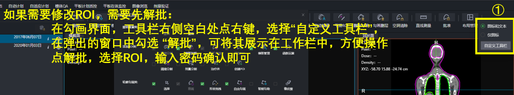
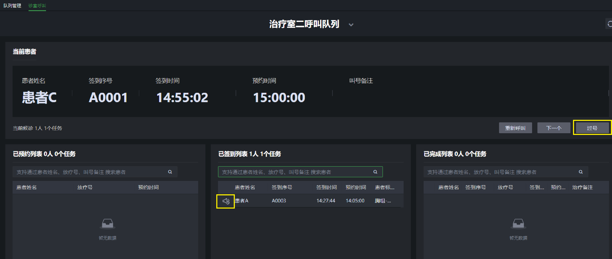

一、流程图
二、操作指导
2.1 ☞ 患者登记
- 1.在<数据中心>点击新增，创建患者
- 2.输入患者信息
- 3.确认

2.2 ☞ 开定位申请单
- 1.打开医生日程，在<开定位申请单>节点选择患者，在操作区点<定位>，进入定位定位申请单页面
- 2.加载模板

- 3.填写定位申请单，保存。 留意其中的必填项，固定装置等信息可在定位时由技师根据实际情况填写。
a.如果制模和定位在同一个房间同时进行，只需要填写定位设备和定位时间，不需要勾选制模
b.如果制模和定位分室操作，需要分别约时间，则需要勾选<是否制模>，并填写制模时间。

2.3 ☞ 制模&定位
- 1.在制模和定位环节，打开定位日程，选设备和日期
- 2.在左侧任务栏中选择患者，根据制模和定位的实际情况，在右侧的表单中填写<固定装置>等信息
- 3.点<定位确认>

2.4 ☞ 勾画
- 1.打开医生日程，选择<勾画>节点
- 2.选择患者，在操作区选择<勾画>，进入该患者的勾画页面

- 3.勾画完成后，批准，批准后这个任务会流转到下个节点。
- 也可以回到医生日程中的<勾画>节点，在任务上直接点<完成>。

2.5 ☞ 开处方单
- 1.在医生日程里，选择<确定治疗方案>节点，在操作区点<处方>进入计划申请单页面。如果有已存在且未批准的计划单，会给出弹窗提醒

- 2.加载模板

- 3.选择治疗室

- 4.修改/编辑靶区处方和剂量约束，其中约束参数可单独通过模板加载。编辑完成后，批准处方。

2.6 ☞ 计划设计
查看/打印处方单：
在uTPS做计划：
- 1.打开物理师日程，选择<计划设计>节点，选中患者
- 2.先把物理师选为自己（领用计划），再在操作区点<跳转计划>进入计划页面

- 3.点添加计划，注意关联一个计划申请单

- 4.计划做好后，回到物理师日程的<计划设计>节点，填写或修改该患者的治疗点、治疗室和技术类型等信息，点<设计完成>。
在第三方TPS里做计划：
做完后在操作区点<设计完成>

2.7 ☞ 医生评估计划
在uTPS里做的计划
- 1.打开医生日程里的<评估计划>节点，选中患者，点<跳转评估>进入计划评估页面

- 2.打开医生日程里的<评估计划>节点，选中患者，点<跳转评估>进入计划评估页面

在其它TPS中做的计划
去其它TPS中评估，评估通过后，在此节点中点<审核完成>。

<中止流程>可将患者流程中断，中断后可在<中止>节点恢复流程。
2.8 ☞ 物理师批准计划
医生评估通过的计划（在评估界面批准射束组后）会流转到物理师日程的<批准计划>节点。
在uTPS里做的计划：
- 1.打开<计划批准>节点，选择患者，在操作区点<跳转评估>可进入患者的评估界面。
- 2.加载计划，审核无误后，点击批准计划
- 3.(如果需要)，可在此界面打印计划报告
- 4.回到<计划批准>节点，点<评估完成>

其它TPS做的计划：
- 去相应的系统中批准计划，在<计划批准>节点中相应患者的操作区点<评估完成>
2.9 ☞ 计划管理/计划传输
uTPS里的计划，在<计划批准>后，任务会流转到<计划管理>节点
其它TPS的计划，任务会流转到<计划传输>节点
在uTPS里做的计划：
- 1.打开<计划管理>节点，选择患者，点<跳转计划管理>进入计划管理页面。
- 2.如果需要提前添加IGRT射野，在此页面选中计划，点 I+，选择一张射野类型，确定。
- 3.选中计划，批准确认
在其它TPS里做的计划：
- 1.在批准后（Plan Approval），需要在相应TPS中把RTPlan导出给uTPS。
- 2.打开<计划传输>节点，双击患者，导入，选择第三方TPS发来的RTPlan导入。

- 3.如果只有一个已批准的处方单，导入的计划会自动跟它关联，此步骤可以跳过。如果有多个已批准的处方单，则需要回到<计划传输>节点，在此患者的操作区点<关联批准>，选择正确的处方单做关联。
2.10 ☞ 计划排程
- 1.在<计划排程>节点，选中患者，点<跳转到计划排程>进入排程页面。

- 2.创建治疗分次，选择治疗日期和时间。
- 排程不是必要操作，在<预约管理>中也可以预约日期和时间。
2.11 ☞ 治疗预约管理
- 1. 选择设备类型和名称。
- 2.若计划未排程，在<待预约日期>列里选择患者，拖到右侧日历栏中，选择治疗日期和时间
- 3. - 若计划已排程，选择了日期但未选择时间，从<待预约时间>列里选择患者，拖到右侧日历栏的具体时间段中
2.12 ☞ 患者签到
- 1.患者持身份证/二维码/条形码到签到机签到，签到机界面会显示签到成功。
- 2.患者需在可签到时间段签到才可成功签到
- 已签到的患者不可再次签到
2.13 ☞ 排队叫号
- 1.在左侧导航栏打开<排队叫号系统>的<诊室呼叫>页面。选择治疗室，可看到已预约、已签到、已呼叫三个列表。
- 2.已预约患者可在签到机上刷卡或扫码签到。工作人员也可以在已预约任务列表中选中患者点右键，为患者签到。签到后，患者从<已预约列表>进入<已签到列表>。
- 3.点〈下一个〉呼叫下一位患者。
- 4.右键点击已签到患者，选择退号，可将已签到患者退回到已预约列表；选择优先可把呼叫顺序排到第一位，此时签到序号上会带上优先标识。
- 5.若患者长时间未进入治疗室，点〈过号〉，患者将回到已签到列表，并带上过号的标记。

- 6.治疗完成的患者，在〈已完成〉列表中显示为白色。
- 7.已呼叫但未完成治疗的患者，在已完成列表中显示为橙色，可点姓名前的退回按钮将其退回到已签到。
2.14 ☞ 添加治疗记录
- 联影的机器会自动记录治疗信息，无需手动记录。其它机器需要双击当前患者添加治疗记录
- 呼叫患者后，在当前呼叫的患者上双击，打开治疗记录，填写IGRT记录。
- 选择治疗完成的状态为<完成>，点<治疗确认>记录治疗信息。
- 如果治疗中断，把中断的射野选为<未完成>状态，填写实际输出的MU，填写中断记录，点〈治疗中止〉。
- 点<治疗中止>，意思是本次治疗中断，记录中断时输出的MU，后续还可以打开，继续记录剩下的MU。
- 暂停治疗：在叫号列表中不再显示，在<预约管理>页面的日历中还在，并且会随时间顺延。可在日历中选中该患者，在工具栏中<恢复治疗>。
- 终止治疗：停止该患者所有分次，取消排程，无法在<预约管理>中恢复。
×